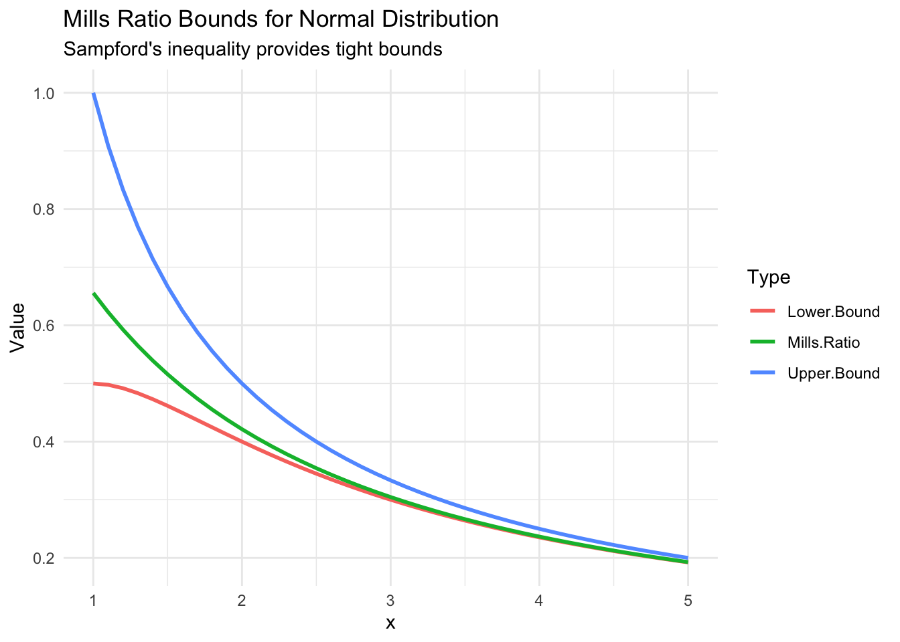

Mathematical Theory of Mills Ratios
Deep dive into the mathematics of tail thickness
2026-02-02
Source:vignettes/theory.qmd
Introduction
The Mills ratio, first tabulated by Mills (1926), provides a fundamental measure of tail thickness in probability distributions. This article explores the mathematical foundations and theoretical properties of Mills ratios.
Definition
The Mills ratio is defined as:
where: - is the probability density function - is the cumulative distribution function - is the survival function
Asymptotic Behavior
Normal Distribution
For the standard normal distribution, as :
The leading term dominates, indicating thin tails.
Show code
x <- seq(2, 10, by = 0.5)
mills_exact <- mills_ratio_normal(x)
mills_approx <- 1/x
data.frame(
x = x,
exact = mills_exact,
approximation = mills_approx,
relative_error = abs(mills_exact - mills_approx) / mills_exact
) x exact approximation relative_error
1 2.0 0.4213692 0.5000000 0.186607766
2 2.5 0.3542651 0.4000000 0.129097919
3 3.0 0.3045903 0.3333333 0.094366218
4 3.5 0.2665678 0.2857143 0.071826076
5 4.0 0.2366524 0.2500000 0.056401786
6 4.5 0.2125706 0.2222222 0.045404410
7 5.0 0.1928081 0.2000000 0.037300793
8 5.5 0.1763230 0.1818182 0.031165512
9 6.0 0.1623777 0.1666667 0.026413767
10 6.5 0.1504370 0.1538462 0.022661748
11 7.0 0.1401042 0.1428571 0.019649373
12 7.5 0.1310794 0.1333333 0.017195519
13 8.0 0.1231320 0.1250000 0.015171014
14 8.5 0.1160821 0.1176471 0.013481802
15 9.0 0.1097873 0.1111111 0.012058123
16 9.5 0.1041336 0.1052632 0.010847378
17 10.0 0.0990286 0.1000000 0.009809323Student’s t-Distribution
For the t-distribution with degrees of freedom, as :
This linear growth indicates fat tails.
Exponential Distribution
For the exponential distribution with rate :
The constant Mills ratio characterizes the exponential tail decay.
Inequalities and Bounds
Sampford’s Inequality
Sampford (1953) established bounds for the normal Mills ratio:
These bounds become tighter as increases.
Show code
x <- seq(1, 5, by = 0.1)
mills <- mills_ratio_normal(x)
lower_bound <- 1/(x + 1/x)
upper_bound <- 1/x
plot_data <- data.frame(
x = x,
`Mills Ratio` = mills,
`Lower Bound` = lower_bound,
`Upper Bound` = upper_bound
) %>%
pivot_longer(-x, names_to = "Type", values_to = "Value")
ggplot(plot_data, aes(x, Value, color = Type)) +
geom_line(size = 1) +
labs(
title = "Mills Ratio Bounds for Normal Distribution",
subtitle = "Sampford's inequality provides tight bounds",
y = "Value"
) +
theme_minimal()Warning: Using `size` aesthetic for lines was deprecated in ggplot2 3.4.0.
ℹ Please use `linewidth` instead.
Relationship to Other Functions
Hazard Function
The hazard function (failure rate) is the reciprocal of the Mills ratio:
Error Function
For the normal distribution:
where is the complementary error function.
Tail Classification
Mills ratio behavior classifies tail thickness:
| Behavior | Tail Type | Example |
|---|---|---|
| Decreasing () | Thin | Normal |
| Constant () | Exponential | Exponential |
| Increasing () | Fat | Student’s t |
Applications in Statistics
Truncated Distributions
The mean of a truncated normal distribution above point is:
Extreme Value Theory
Mills ratios appear in the study of: - Order statistics - Record values - Peaks over threshold models
Computational Considerations
Numerical Stability
For large , direct computation can be unstable. Use:
Show code
# Unstable for large x
unstable_mills <- function(x) {
pnorm(x, lower.tail = FALSE) / dnorm(x)
}
# Stable using log scale
stable_mills <- function(x) {
exp(pnorm(x, lower.tail = FALSE, log.p = TRUE) - dnorm(x, log = TRUE))
}
# Compare at x = 10
x_test <- 10
c(unstable = unstable_mills(x_test),
stable = stable_mills(x_test),
package = mills_ratio_normal(x_test)) unstable stable package
0.0990286 0.0990286 0.0990286